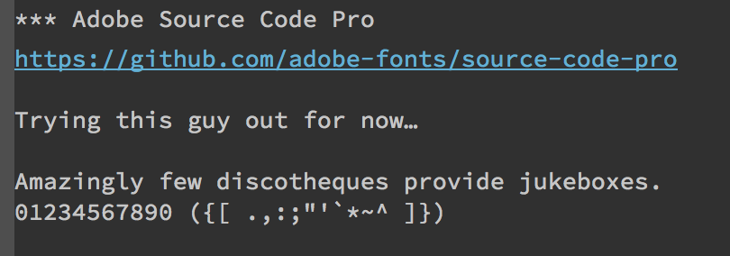
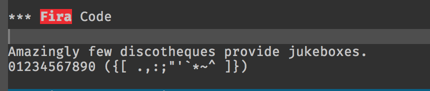
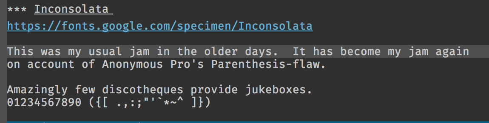
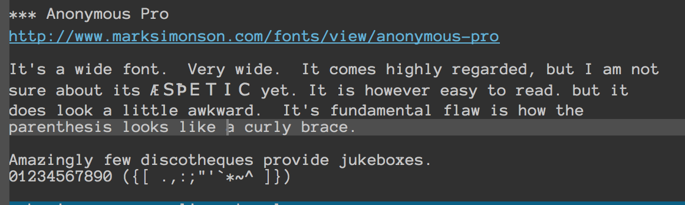

User Interface Elements
Table of Contents
- 1. Keystrokes and commands
- 2. Automated things
- 3. Display display
- 3.1. Turn of scrollbars, toolbars, menu bars
- 3.2. 🛎 Bell 🔔
- 3.3. Fonts
- 3.4. Ansi Color
- 3.5. Maximize primary window
- 3.6. Soft Word Wrap / Visual Line Mode
- 3.7. Frame titles
- 3.8. Modeline
- 3.9. Cursor Info
- 3.10. Highlight Line
- 3.11. Show Empty lines
- 3.12. Show Whitespace with fill-column-indicator deactived
- 3.13. Themes
- 3.14. Digit Groups deactivated
- 3.15. TODO All the Icons?
- 4. Editing
- 5. Navigating
- 6. Saving
- 7. State Management
- 8. Help and Discoverability help
- 9. God Mode
1 Keystrokes and commands
1.1 Simple answers plz!
(fset 'yes-or-no-p 'y-or-n-p)
1.2 It used to be that Once in blue moon, vi keys would happen history
That was before I really dug into Tramp mode.
I would launch vim to edit a file on a remote server. I know just
enough vi to add characters and save and get out. In fact, I would
save with: <ESC>:w and then quit with <ESC>:q!. Not even
<ESC>:wq!
This would hose my muscle memory though. And sometimes I would try to do the same in emacs.
By setting the var w to the string, when it is evaled with ESC-:
the string is evaled instead.
(setq w! "uUuuuuuUUUuuuummmMMMmmmm. This ain't vim.")
Now that I can do most of everything I need through tramp, and the stuff I can't do I can from within a shell inside of emacs, this isn't needed anymore.
I keep it around (but don't load it) because it's clevar and fun.
1.3 Enable all Disabled commands
(setq disabled-command-function nil)
1.4 Newlines
New line AND indent.
(global-set-key (kbd "RET") 'newline-and-indent)
1.5 Kill back to indentation
From https://github.com/purcell/emacs.d/blob/master/lisp/init-editing-utils.el
(defun sanityinc/kill-back-to-indentation () "Kill from point back to the first non-whitespace character on the line." (interactive) (let ((prev-pos (point))) (back-to-indentation) (kill-region (point) prev-pos))) (bind-key "C-M-<backspace>" 'sanityinc/kill-back-to-indentation)
2 Automated things
2.1 Midnight automation
It's very silent in the background, and just kind of does the right thing. Clears out old buffers not in use. I also use it as a next-day scheduler.
I have seen some other Emagicians state that they didn't know why they had this package. See also Diminish.
(use-package midnight :init (setq clean-buffer-list-kill-never-buffer-names '("*httpd*")) :config (midnight-delay-set 'midnight-delay "4:30am"))
3 Display display
There is an argument that Emacs doesn't need to look pretty. That all we're really doing is editing text, so why do anything to it beyond a basic theme to give you syntax colors.
I call bullshit. All of us already live in a prison of existential crisis. Why would we make our text editor any more of a prison?
I eat delicious food, not Soy lent.
I drink excellent beer, not Alberta Genuine Draft.
ÆＳÞＥTＩC is important.
3.1 Turn of scrollbars, toolbars, menu bars
All that said, there are some shit that is just … not good.
Scrollbars, Toolbars and Menu Bars. Oh my.
(dolist (mode '(menu-bar-mode tool-bar-mode scroll-bar-mode)) (when (fboundp mode) (funcall mode -1)))
3.2 🛎 Bell 🔔
When emacs emits C-g (bell) to the user, it is to signal an error, warning or some other alert.
When the user types C-g to emacs, it is to signal an error, or a need to quit.
I rather enjoy that kind of poetry.
I used to hate the visible bell when it flashed the whole screen, but it has sense gotten a lot better. It flashes two bars at the top and bottom now rather than the whole screen, and is nice when you don't have the volume up.
(setq visible-bell t)
3.3 Fonts
Font choice is important aesthetically speaking.
Of the 4 fonts that came recommended to me, I went with Adobe Source Code Pro. Here is my reasoning:
- It looks great.
- The o0 li1I handling is good.
- The differences between ({[]}) are all super apparent.
- It has a great set of weights.
3.3.1 Adobe Source Code Pro
https://github.com/adobe-fonts/source-code-pro
Trying this guy out for now…
Amazingly few discotheques provide jukeboxes. 01234567890 ({[ .,:;"'`*~^ ]})

(set-face-attribute 'default nil :family "Source Code Pro" :height 130 :weight 'normal)
3.3.2 Fira Code
Amazingly few discotheques provide jukeboxes. 01234567890 ({[ .,:;"'`*~^ ]})

(set-face-attribute 'default nil :family "Fira Mono" :height 130 :weight 'normal)
3.3.3 Inconsolata
https://fonts.google.com/specimen/Inconsolata
This was my usual jam in the older days. It has become my jam again on account of Anonymous Pro's Parenthesis-flaw.
Amazingly few discotheques provide jukeboxes. 01234567890 ({[ .,:;"'`*~^ ]})

(set-face-attribute 'default nil :family "Inconsolata" :height 150)
3.3.4 Anonymous Pro
http://www.marksimonson.com/fonts/view/anonymous-pro
It's a wide font. Very wide. It comes highly regarded, but I am not sure about its ÆＳÞＥTＩC yet. It is however easy to read. but it does look a little awkward. It's fundamental flaw is how the parenthesis looks like a curly brace.
Amazingly few discotheques provide jukeboxes. 01234567890 ({[ .,:;"'`*~^ ]})

(set-face-attribute 'default nil :family "Anonymous Pro" :height 140)
3.3.5 Describe Char
Give us all the unicode information for a glyph.
(setq describe-char-unidata-list '(name old-name general-category canonical-combining-class bidi-class decomposition decimal-digit-value digit-value numeric-value mirrored uppercase lowercase titlecase))
3.3.6 Unicode
Unicode
|(⁀ₒ⁀)/ ,( Get all teh characters! )
The unicode-fonts package does a pretty good job of helping you get to a place where all characters can be displayed.
You'll need a number of fonts to make this work, here is the bare minimum:
- Symbola
- http://users.teilar.gr/~g1951d/Symbola.zip
- Quivira
- http://www.quivira-font.com/files/Quivira.ttf
- Dejavu Sans
- http://sourceforge.net/projects/dejavu/files/dejavu/2.35/dejavu-fonts-ttf-2.35.tar.bz2
- Noto Sans
- https://github.com/googlei18n/noto-fonts/blob/master/hinted/NotoSans-Regular.ttc?raw=true
- Noto Sans Symbols
- https://github.com/googlei18n/noto-fonts/blob/master/unhinted/NotoSansSymbols-Regular.ttf?raw=true
Really though, the key here is being able to get all the emoji.
The secret sauce to making sure to get all the emoji is (setq unicode-fonts-ignore-overrides t)
👯 ,( Get all teh Emoji! )
(use-package unicode-fonts :demand :init (setq unicode-fonts-skip-fonts) (setq unicode-fonts-ignore-overrides t) (use-package persistent-soft :demand) :config (let ((block (assoc "Enclosed Ideographic Supplement" unicode-fonts-block-font-mapping))) (setf (cdr block) (list (cons "Apple Color Emoji" (cadr block))))) (unicode-fonts-setup))
3.4 Ansi Color
ARGH, we were so close to getting away from this until hipsters brought it all back again.
Thanks Obama.
(require 'ansi-color)
3.5 Maximize primary window
This seems to be the best way to get emacs to be maximized on the primary display in a multi monitor setup on OS X. I want emacs maximized on a single monitor, and not to create it's own OS X screen.
You'd think that as an old Amiga head I'd enjoy the screen handling of OS X, but it just seems really clunky. It doesn't have the same charm as the Other Raster Port.
(setq default-frame-parameters '((fullscreen . maximized))) (defun emagician/full-screen () "Fullscreen mode!" (interactive) (modify-frame-parameters nil '((fullscreen . maximized)))) (emagician/full-screen)
3.6 Soft Word Wrap / Visual Line Mode
"Visual Line Mode" is probably the worst name ever.
I prefer movement and killing via logical lines, not visual lines.
Also, Indicators Plz!
Thanks to Wasamasa
https://github.com/wasamasa/dotemacs/blob/master/init.org#display-fringe-indicators-and-fix-line-movement-in-visual-line-mode
for the funk of using (setcdr) on the map. Brilliant.
(setcdr visual-line-mode-map nil) (setq visual-line-fringe-indicators t) (setq line-move-visual nil) (global-visual-line-mode 1)
3.7 Frame titles
Shamelessly snarfed from bbatsov.
Shows either the full file path or buffer name, and the name of the process when available.
(setq frame-title-format '("" invocation-name " -|-+-|- " (:eval (if (buffer-file-name) (abbreviate-file-name (buffer-file-name)) "%b")) (:eval (when (get-buffer-process (current-buffer)) (format "[%s]" (process-name (get-buffer-process (current-buffer))))))))
3.8 Modeline
The modeline should show as much information as required, in as small a space as possible. I am a too-much-info kinda guy. It's a sickness.
3.8.1 Basics
(setq column-number-mode t) (setq line-number-mode t)
3.8.2 Diminish
I am not sure if it is Author: Will Mengarini, or Maintainer: Martin Yrjölä who came up with this, but it is the most poetic commentary in any lisp file I have seen so far:
;; When we diminish a mode, we are saying we want it to continue doing its ;; work for us, but we no longer want to be reminded of it. It becomes a ;; night worker, like a janitor; it becomes an invisible man; it remains a ;; component, perhaps an important one, sometimes an indispensable one, of ;; the mechanism that maintains the day-people's world, but its place in ;; their thoughts is diminished, usually to nothing. As we grow old we ;; diminish more and more such thoughts, such people, usually to nothing. ;; "The wise man knows that to keep under is to endure." The diminished ;; often come to value their invisibility. We speak--speak--of "the strong ;; silent type", but only as a superficiality; a stereotype in a movie, ;; perhaps, but even if an acquaintance, necessarily, by hypothesis, a ;; distant one. The strong silent type is actually a process. It begins ;; with introspection, continues with judgment, and is shaped by the ;; discovery that these judgments are impractical to share; there is no ;; appetite for the wisdom of the self-critical among the creatures of ;; material appetite who dominate our world. Their dominance's Darwinian ;; implications reinforce the self-doubt that is the germ of higher wisdom. ;; The thoughtful contemplate the evolutionary triumph of the predator. ;; Gnostics deny the cosmos could be so evil; this must all be a prank; the ;; thoughtful remain silent, invisible, self-diminished, and discover, ;; perhaps at first in surprise, the freedom they thus gain, and grow strong.
So yeah. It's a great mode to have around, but there's that too.
(use-package diminish) (diminish 'visual-line-mode "↩️ ") (use-package autorevert :diminish (auto-revert-mode . "🔂 "))
3.8.3 Nyan mode
Nyan mode conveys information. It's also Cute AF.
(use-package nyan-mode :init (setq nyan-wavy-trail t) (setq nyan-bar-length 10) (setq nyan-animate-nyancat t))
3.8.4 Turn on column and line numbers; file size
(column-number-mode 1) (line-number-mode 1) (size-indication-mode t)
3.8.5 The EMagician powerline theme
Inludes Nyan cat powers.
This theme is a beast. I don't like it. I love how it looks visually, but I hate how it looks in code.
(defun emagician/powerline-theme () "Setup the default mode-line." (interactive) (setq-default mode-line-format '("%e" (:eval (let* ((active (powerline-selected-window-active)) (mode-line-buffer-id (if active 'mode-line-buffer-id 'mode-line-buffer-id-inactive)) (mode-line (if active 'mode-line 'mode-line-inactive)) (face1 (if active 'powerline-active1 'powerline-inactive1)) (face2 (if active 'powerline-active2 'powerline-inactive2)) (separator-left (intern (format "powerline-%s-%s" (powerline-current-separator) (car powerline-default-separator-dir)))) (separator-right (intern (format "powerline-%s-%s" (powerline-current-separator) (cdr powerline-default-separator-dir)))) (lhs (list (powerline-raw "%*" mode-line 'l) (powerline-buffer-size mode-line 'l) (powerline-buffer-id mode-line-buffer-id 'l) (powerline-raw " ") (funcall separator-left mode-line face1) (powerline-narrow face1 'l) (powerline-vc face1))) (rhs (list (powerline-raw global-mode-string face1 'r) (powerline-raw "%4l" face1 'r) (powerline-raw ":" face1) (powerline-raw "%3c" face1 'r) (funcall separator-right face1 mode-line) (powerline-raw " ") (powerline-raw "%6p" mode-line 'r) (powerline-hud face2 face1))) (center (list (powerline-raw " " face1) (funcall separator-left face1 face2) (when (and (boundp 'erc-track-minor-mode) erc-track-minor-mode) (powerline-raw erc-modified-channels-object face2 'l)) (powerline-major-mode face2 'l) (powerline-process face2) (powerline-raw " :" face2) (powerline-minor-modes face2 'l) (powerline-raw " " face2) (funcall separator-right face2 mode-line) (powerline-raw " " mode-line) (nyan-create) (funcall separator-right mode-line face2) (powerline-raw " " face2) (funcall separator-right face2 face1)))) (concat (powerline-render lhs) (powerline-fill-center face1 (/ (powerline-width center) 2.0)) (powerline-render center) (powerline-fill face1 (powerline-width rhs)) (powerline-render rhs)))))))
3.8.6 Other settings
Available Separators are: alternate, arrow, arrow-fade, bar, box, brace, butt, chamfer, contour, curve, rounded, roundstub, slant, wave, zigzag
- butt
- Looks sexy. Seriously.
- brace
- What it {says} on the tin.
(use-package powerline :demand :init (setq powerline-default-separator 'bar) (emagician/powerline-theme))
3.8.7 Smart Mode Line disabled
Not sure that this adds anything
(emagician/expect-package 'smart-mode-line)
3.9 Cursor Info
There are a few ways to change the cursor: blinking, shape and color. Basically this gives us three different dimensions of information available to us.
3.9.1 Dimension 1: File status
- light blue
- no file or process attached
- dark blue
- process attached
- yellow
- read only
- red
- Important (SSH to production server, etc)
- grey
- file visited
3.9.2 Dimention 2: Modal Editing
- overwrite
- hollow box
- 'normal'
- line
- god mode
- Horizontal cursor
3.9.3 Enhancements
3.9.3.1 TODO set up a way to handle production buffers through a buffer local var.
;; Change cursor color according to mode (defvar emagician/set-cursor-color-color "") (defvar emagician/set-cursor-color-type nil) (defvar emagician/set-cursor-color-buffer "") (defvar-local emagician/dangerous-buffer nil) (defun emagician/set-cursor-color-according-to-mode () "change cursor color according to some minor modes." ;; set-cursor-color is somewhat costly, so we only call it when needed: (let ((color (cond (emagician/dangerous-buffer "red") ((comint-check-proc (current-buffer)) "blue") (buffer-read-only "white") ((not (equal buffer-file-name nil)) "grey50") (t "cyan"))) (type (cond (god-local-mode '(hbar . 3)) (overwrite-mode 'hollow) (t '(bar . 2))))) (unless (and (string= color emagician/set-cursor-color-color) (equal type emagician/set-cursor-color-type) (string= (buffer-name) emagician/set-cursor-color-buffer)) (set-cursor-color (setq emagician/set-cursor-color-color color)) (setq cursor-type (setq emagician/set-cursor-color-type type)) (setq emagician/set-cursor-color-buffer (buffer-name))))) (add-hook 'post-command-hook 'emagician/set-cursor-color-according-to-mode)
3.10 Highlight Line
(global-hl-line-mode 1)
3.11 Show Empty lines
(setq indicate-empty-lines t)
3.12 Show Whitespace with fill-column-indicator deactived
I was initially using fill-column-indicator, but that turned out to be kinda buggy. It looks It would hose org exports and also whack visual-line-mode.
See Show whitespace in Programming.org
(use-package fill-column-indicator :init (setq fci-rule-width 1) (setq fci-rule-column 81) (define-globalized-minor-mode global-fci-mode fci-mode (lambda () (fci-mode 1))) (global-fci-mode 1))
3.13 Themes
3.13.1 Base theme: Moe, Moe, Kyun!
This theme is my favorite so far. It's got good color choices and it's nice and dark.
3.13.1.1 Set up different colors for different days
The colors are:
| Day | apsect | Color | ☰ |
|---|---|---|---|
| Sunday | Benevolence | yellow | 🌞 |
| Monday | Reverence | blue | 🌚 |
| Tuesday | Courage | red | ♂ |
| Wednesday | Honesty | cyan | ☿ |
| Thursday | Rectitude | green | ♃ |
| Friday | Honour | magenta | ♀ |
| Saturday | Loyalty | b/w | ♄ |
(defun emagician/get-moe-color-for-day (&optional day) (when (null day) (setq day (nth 6 (decode-time)))) (case day ((0) 'yellow) ((1) 'blue) ((2) 'red) ((3) 'cyan) ((4) 'green) ((5) 'magenta) ((6) 'w/b))) (ert-deftest emagician/color-check () (should (equal (emagician/get-moe-color-for-day 1) 'blue)) (should (equal (emagician/get-moe-color-for-day 5) 'magenta)) (should (member (emagician/get-moe-color-for-day) '(yellow blue red cyan green magenta w/b))))
3.13.1.2 Main setup
The theme needs to be loaded after powerline to work.
(use-package moe-theme :init (setq moe-theme-highlight-buffer-id t) :config (emagician/defhook update-moe-color midnight-hook (moe-theme-set-color (emagician/get-moe-color-for-day)) (emagician/powerline-theme)) (moe-theme-set-color (emagician/get-moe-color-for-day)) (moe-dark) (powerline-moe-theme) (emagician/powerline-theme) (powerline-reset) )
3.13.2 Org Beautify
Load from our bad self!
(add-to-list 'custom-theme-load-path (expand-file-name "themes/org-beautify-theme/" emagician/dir)) (load-theme 'org-beautify t)
3.14 Digit Groups deactivated
Currently a little buggy, completely overrides my theme.
Group Numbers together into thousands, millions, billions.
10000000000
Looks like this:
10000000000 -- ---
(use-package digit-groups :demand :init (digit-groups-global-mode 1))
3.15 TODO All the Icons?
4 Editing
4.1 UTF-8 Enforcement
I've kept a version of this since 2006.
(prefer-coding-system 'utf-8) (set-default-coding-systems 'utf-8) (set-terminal-coding-system 'utf-8) (set-keyboard-coding-system 'utf-8)
4.2 The Mark
4.2.1 Transient mark mode
For now Transient Mark mode is just turned off. I don't like transients.
Seriously though, the reason why I like not having transient mark mode is that I have gotten into the habit of dropping marks and using the mark ring. I also use the mark for nagivation, and having transient mark mode on messes with my workflow.
If you are opposite, then let me know (file a bug report: https://github.com/jonnay/emagicians-starter-kit/issues/new) and I'll fix the emagicians kit so that transient mark mode can be easily activated.
(transient-mark-mode -1)
4.2.2 Show Marks :learn-me:
(use-package show-marks)
4.3 Multiple Cursors bind
Note that this is a great example of building your own custom keymap and using it with use-package. Thanks habamax and jwiegley. https://github.com/jwiegley/use-package/issues/366
(use-package multiple-cursors :init (define-prefix-command 'emagician/mc-keymap) :bind-keymap (("C-S-c" . emagician/mc-keymap)) :bind (:map emagician/mc-keymap ("e" . mc/edit-lines) ("n" . mc/mark-next-like-this) ("p" . mc/mark-previous-like-this) (")" . mc/mark-next-symbol-like-this) ("(" . mc/mark-prev-symbol-like-this) ("h" . mc/mark-all-like-this) ("s" . mc/mark-all-in-region) ("f" . mc/unmark-next-like-this) ("F" . mc/skip-to-next-like-this) ("b" . mc/unmark-previous-like-this) ("B" . mc/skip-to-previous-like-this)))
4.4 Killing and Yanking
Having a big kill ring is very helpful. It's searchable by helm.
(setq kill-ring-max 120)
Also, the system clipboard is a must have.
(setq save-interprogram-paste-before-kill t)
Allow Read-only killing. Being able to throw chunks of a read-only buffer is so powerful. It's one of the things I love about emacs.
The Power of plain text.
(setq kill-read-only-ok t)
Kill-whole-line just blew chunks for me. REALLY blew chunks.
(setq kill-whole-line nil)
4.4.1 Volatile Highlights
Shows what changed through undo, yank etc. commands
(use-package volatile-highlights :diminish "" :init (volatile-highlights-mode t))
4.4.2 Swap
Found from Stackoverflow. Thank you jcubic and legoscia. http://stackoverflow.com/questions/22039847/emacs-lisp-function-with-optional-argument-call-other-function#22040296
(defun swap-region-with-kill (&optional arg) "replace selected text with the one from kill ring" (interactive "*P") (backward-delete-char (- (point) (mark))) (yank arg))
4.4.3 kill-buffer-file-name
I use this all the time.
(defun kill-buffer-file-name () "Show current buffer's filename in the echo area and add it to the kill ring." (interactive) (let ((buffer-file-name (buffer-file-name))) (if (null buffer-file-name) (message "Buffer %s is not associated with a file." (buffer-name)) (message "%s" (kill-new buffer-file-name)))))
(defun kill-buffer-file-basename () "Show the buffers base name in the echo area and add it to the kill ring." (interactive) (let ((bufer-file-name (buffer-file-name))) (if (not (null buffer-file-name)) (message "%s" (kill-new (file-name-nondirectory buffer-file-name))) (error "Buffer %s is not associated with a file" (buffer-name)))))
4.5 Snippets
See also ./Snippets.html for the actual Snippets.
Set the snippet dir.
(use-package yasnippet :diminish "" :init (setq yas-snippet-dirs `(,(emagician/expect-dir "assets/snippets"))) (setq yas-trigger-key nil) (add-hook 'text-mode-hook 'yas-minor-mode-on) :config (diminish 'yas-minor-mode "") (yas/reload-all))
This rigamaroo might nit be needed anymore:
(defun yas/org-very-safe-expand () (let ((yas/fallback-behavior 'return-nil)) (yas/expand))) (defun yas/org-setup () ;; yasnippet (using the new org-cycle hooks) (make-variable-buffer-local 'yas/trigger-key) (setq yas/trigger-key [tab]) (add-to-list 'org-tab-first-hook 'yas/org-very-safe-expand) (define-key yas/keymap [tab] 'yas/next-field)) ;(add-hook 'org-mode-hook #'yas/org-setup)
4.6 Completion completion
4.6.1 Company Mode
(use-package company :diminish "🈺 " :init (global-company-mode) :config (use-package company-statistics :config (company-statistics-mode)))
4.6.2 Auto Complete deactivated
It's time to switch. AC hasn't really changed that much, and it is starting to look awful.
Note: if you were looking for the AC sources for a particular language or mode, then you will want to look in those specific language/mode emagician files.
`ac-ignore-case` is really burning me right now, so I am enabling it.
(use-package auto-complete :demand :diminish "" :init (setq ac-auto-show-menu t) (setq ac-dwim t) (setq ac-use-menu-map t) (setq ac-ignore-case nil) (setq ac-quick-help-delay (+ 0.125 (/ 0.125 2))) (setq ac-quick-help-height 20) (set-default 'ac-sources '(ac-source-yasnippet ac-source-dictionary ac-source-filename ac-source-files-in-current-dir ac-source-words-in-buffer ac-source-words-in-same-mode-buffers)) :bind (:map ac-completing-map ("C-M-n" . ac-next) ("C-M-p" . ac-previous) ("<tab>" . ac-complete) ("M-<ret>" . ac-help) ("<ret>" . nil)) :config (require 'auto-complete-config) (ac-config-default) (ac-flyspell-workaround) (global-auto-complete-mode t) (emagician/expect-dir "assets/ac-dictionaries") (add-to-list 'ac-dictionary-directories (expand-file-name "assets/ac-dictionaries" emagician/dir)))
4.6.2.1 Auto Complete Default Sources :tangle no
(set-default 'ac-sources '(ac-source-yasnippet ac-source-dictionary ac-source-words-in-buffer ac-source-words-in-same-mode-buffers))
4.7 Undo
(use-package undo-tree :diminish "" :init (setq undo-tree-enable-undo-in-region t undo-tree-visualizer-diff t undo-tree-zer-timestamps t) :config (global-undo-tree-mode))
4.8 Spell Checking
Your Emacs has cast aspell!
(use-package flyspell :diminish (flyspell-mode . ""))
5 Navigating
5.1 Scrolling
Keep the screen position when scrolling.
(setq scroll-preserve-screen-position t)
5.2 Avy learn
Basically Acejump++.
(use-package avy :bind (("M-g f" . avy-goto-line) ("M-g h" . avy-goto-char-2) ("M-g i" . avy-goto-char)))
5.3 Ace window jump
- Set the keys to home-row
- Make the ace-jump key super visible
- Only apply to this frame
(use-package ace-window :init (face-spec-set 'aw-leading-char-face '((t (:inherit avy-lead-face :height 3.0)))) (setq aw-scope 'frame) (setq aw-keys '(?a ?s ?d ?f ?g ?h ?j ?k ?l)) :bind ("C-x o" . ace-window))
5.4 Save Place
Saveplace allows emacs to remember where you were in a file. It is very handy and mostly transparent.
(require 'saveplace) (setq-default save-place t)
5.5 Goto Last Change learn
(use-package goto-last-change :bind ("C-x C-/" . goto-last-change))
5.6 Uniquify
Rename buffers so they are unique.
(require 'uniquify)
5.7 Searching
5.7.1 Default to regexp Searches
(global-set-key [(control s)] 'isearch-forward-regexp) (global-set-key [(control r)] 'isearch-backward-regexp)
6 Saving
6.1 Backups
Disabling backups was a monumentally stupidly bad idea. I shall never do it again. I figured since I was working mostly in source control, I'd be safe. Then I was wrong one day, and lost a very important change.
Lesson learned.
(setq auto-save-default t)
Set the directory to a directory in the user-emacs-directory, and then create it.
(setq backup-directory-alist `(("." . ,(emagician/expect-dir "backups" user-emacs-directory)))) (setq tramp-backup-directory-alist backup-directory-alist)
Never delete any old verisons.
(Disk is cheap and text is tiny.)- 🐦
(setq delete-old-versions -1)
Even in version control. And while were at it, lets version control backups.
(Again. Disk. Cheep.)- 🐦
(setq version-control t) (setq vc-make-backup-files t)
Auto save filename translation, put everything in it's own directory.
Also, this might fix auto-saves in tramp?
(setq auto-save-file-name-transforms `((".*" ,(emagician/expect-dir "auto-save-list" user-emacs-directory) t)))
7 State Management
7.1 Server
Server is good shit. Lots of funk there.
(unless (string-equal "root" (getenv "USER")) (require 'server) (unless (server-running-p) (server-start)))
7.2 Recent Files
500 should be as enough files to handle long editing sessions at work, and some weekend projects as well.
(require 'recentf) (setq recentf-max-saved-items 500)
7.3 History
Our sense of self is really our sense of history. The I that sits behind your eye is the memories of your self.
Save all history. This is okay because we delete duplicates.
(setq history-length t) (setq history-delete-duplicates t)
7.4 Save History
(setq savehist-save-minibuffer-history 1) (setq savehist-additional-variables '(search-ring regexp-search-ring kill-ring compile-command )) (setq savehist-autosave-interval 60) (savehist-mode t)
8 Help and Discoverability help
8.1 Achievements
Achievements are fun! There is nothing at all wrong with exploring them.
(use-package achievements :demand :diminish "🏆 " :init (setq achievements-idle-time 300))
8.2 Which Key
More like—witch key. Which-key is the ultimate in discoverability. I really enjoy this package and for-stalled my install of god-mode until I was sure they could play well together.
(use-package which-key :demand :diminish "" :init (setq which-key-idle-delay 0.6) (setq which-key-is-verbose t) (setq which-key-min-display-lines 3) (setq which-key-sort-order 'which-key-local-then-key-order) (setq which-key-max-description-length 50) (setq which-key-show-remaining-keys t) (setq which-key-lighter "❔") (which-key-mode))
8.3 Discover My Major :learn-me:bind:
f1 is now a discovery prefix key. From there you can get help on various modes.
(defmacro make-discovery (sym &optional mode) "Make a command called discover-NAME" (let* ((name (symbol-name sym)) (command (intern (concat "discover-" name))) (mode (or mode (intern (concat name "-mode"))))) `(defun ,command () ,(concat "Automagickally created by Emagicians Starter kit.\n" "Helps the user discover mode " (symbol-name mode)) (interactive) (discover-my-mode (quote,mode))))) (use-package discover-my-major :init (make-discovery paredit) (make-discovery projectile) (make-discovery ruby-tools) ;(make-discovery company) (bind-keys :prefix-map discovery-map :prefix "<f1>" ("<f1>" . discover-my-major) ("<f2>" . discover-my-mode) ("(" . discover-paredit) ; ("c" . discover-company) ("p" . discover-projectile) ("r" . discover-ruby-tools)))
8.3.1 TODO fix Company Discovery
8.4 How Do I?
(use-package howdoi :init (setq howdoi-display-question t) :bind (:map discovery-map ("?" . howdoi-query)))
8.5 Helm
I have a complicated relationship with helm.
- ⛥
- On the one hand its completion mechanism just does what I expect. Little to no fuss nor muss.
- ⛥
- On the other hand it's a bitch to extend and seems to have gotten very far from it's easy-to-extend Anything roots. Case-in-point:
M-xused to not only show commands, but give you actions to provide documentation for them, their source location, as well as a whole host of other things. I miss that.
It's still a demand package though.
(use-package helm :demand :diminish (helm-mode . "") :init (global-set-key [f2] 'emagician/helm) (require 'helm-config) (require 'helm-ring) (use-package helm-ls-git :demand) (helm-mode 1))
8.5.1 F2 is my super duper DWIM helper
F2 means "I wanna do something, get somewhere." So show me a list of everything.
(defun emagician/helm () "Super powered helm mode to DWIM!" (interactive) (unless (and helm-source-ls-git-status helm-source-ls-git) (setq helm-source-ls-git-status (helm-make-source "Git status" 'helm-ls-git-status-source :fuzzy-match helm-ls-git-fuzzy-match) helm-source-ls-git (helm-make-source "Git files" 'helm-ls-git-source :fuzzy-match helm-ls-git-fuzzy-match))) (unless helm-source-buffers-list (setq helm-source-buffers-list (helm-make-source "Buffers" 'helm-source-buffers))) (helm :sources '(helm-source-buffers-list helm-source-files-in-current-dir helm-source-ls-git-status helm-source-ls-git helm-source-mark-ring helm-source-bookmarks helm-source-recentf helm-source-register helm-source-buffer-not-found)))
8.5.1.1 Key binding muscle memory
The Fix-Muscle Memory keybinding setting re-enables the "You can run the command foo with bar". This is one of the annoyances with Helm-M-x for me.
8.5.2 Show full paths
(setq helm-ff-transformer-show-only-basename nil)
8.5.3 Extended Command, Buffer Selection, Insert, write and find files should use helm.
(with-eval-after-load 'helm (global-set-key (kbd "M-x") 'helm-M-x) (global-set-key (kbd "C-x b") 'helm-buffers-list) (global-set-key (kbd "C-x C-f") 'helm-find-files) (global-set-key (kbd "M-y") 'helm-show-kill-ring)) (setq helm-M-x-always-save-history t)
8.5.4 Personal Preferences
Make helm open a new window instead of taking over another.
Make it a bit nicer too.
(setq helm-split-window-in-side-p t) (setq helm-candidate-separator "──────────────────────────────")
9 God Mode
Just starting to use god mode, not sure about it yet.
(use-package god-mode :bind (("<escape>" . god-local-mode)) :diminish "🐰 " :config (which-key-enable-god-mode-support))
Footnotes:
Thanks habamax and jwiegley. https://github.com/jwiegley/use-package/issues/366